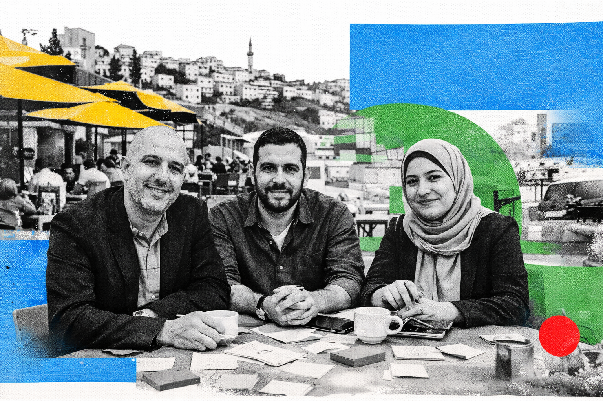

Funder and Oversight Partner
Future Skills Fund
Future Skills Fund is the funding mechanism and operational oversight layer supporting AI.SPIRE through the Crown Prince Foundation ecosystem in Jordan.
Future Skills Fund is the funding mechanism and operational oversight layer supporting AI.SPIRE through the Crown Prince Foundation ecosystem in Jordan.

FSF enables the program to focus on durable outcomes rather than one-off training activity.
The funder role helps align stakeholders, track delivery, and keep the initiative connected to larger goals.
Through the Crown Prince Foundation ecosystem, FSF connects AI.SPIRE to a broader national focus on youth opportunity and economic participation.
In the LevelUp model, funding is most powerful when it strengthens the whole system: curriculum, delivery, employer relevance, reporting, and future pathways.
Clarify what the initiative needs to accomplish for learners, employers, institutions, and the wider economy.
Fund the operating model needed for curriculum development, hybrid delivery, learner support, and partner coordination.
Use oversight and reporting to keep implementation visible, credible, and aligned with stakeholder expectations.
Use what is learned from AI.SPIRE to inform future programs, including cybersecurity and other Darb.Tech pathways.
FSF supports the conditions that allow partners to design, deliver, measure, and improve the initiative.
Clear funder involvement helps learners, employers, and institutions understand that the work is serious and accountable.
AI.SPIRE is the first Darb.Tech course supported through this funding and oversight structure.